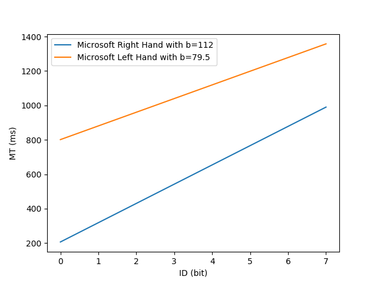
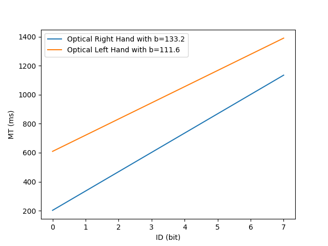
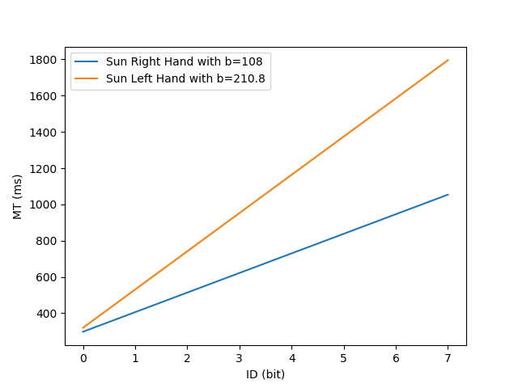
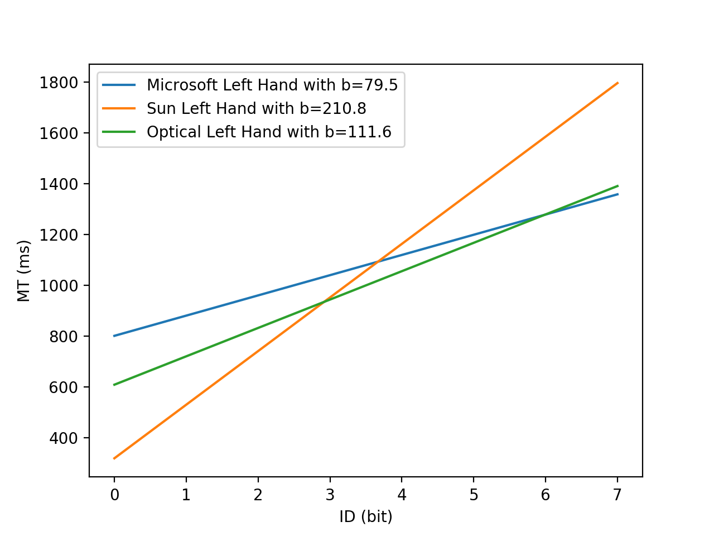
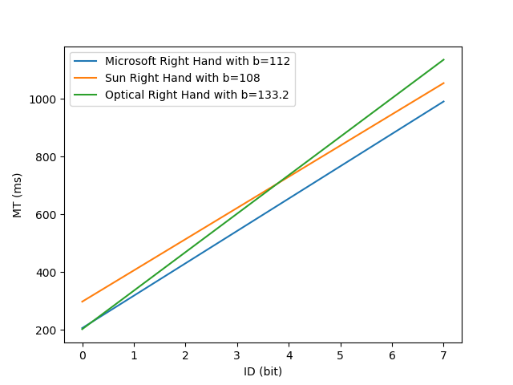

The purpose of performing Fitts Law is to discover the performance differences caused by using the dominant hand or nondominant hand, or different types of mouses.
The experimenters are both right-handed users. Each of the experimenters performed a set of experiment. We did two sets of Fitts Law performance comparing right hand and left hand and also across three pointing devices. The devices we used are Microsoft IntelliMouse optical mouse (2001), Deiog optical mouse (2017) and Sun Microsystem Crossbow mouse (2003). The first two are Optical Mouse and the latter one is Wheel Mouse. All the experiments were performed on the GoFitts Java Application on Mac OS. We choose to perform on the 1D graphics and set the Number of Trials to 5 for each combination of A and W values. All the performance were measured by throughput.
The first set of experiment is to test the performance difference between the dominant hand (right-handed) and nondominant hand (left-handed).



Comparing the MT-ID regression graphs, we found that the MT of right-handed case is always less than the MT of left-handed case when the ID is the same. It very clearly shows that the dominant hand has better performance than the nondominant hand. In addition, we also found the trendlines are similar when using the two kinds of optical mouse, by the right hand or left hand: as the ID increases, the MTs gradually increases and the trendlines have a tendency to intersect. But the trendlines of the wheel mouse is completely different from those of the optical mouses, as the ID increases, the separation of the two trendlines is getting larger and larger.
In addition, as shown in the average TP performance bar graphs (the experiments data are shown below), the average TP is 4.67 bits/s when using the sun mouse by the right hand, while is 3.16 bits/s by the left hand. Using the Microsoft mouse average TP is 5.87 bits/s by using the right hand and 2.62 bits/s by the left hand. The average TP is 4.98 bits/s when using the Deiog mouse by the right hand and 2.91 bits/s by the left hand.
According to the data, the TP value of the dominant hand is significantly larger than the nondominant hand. It suggests that the right hand has consistently better performance across all the pointing devices tested in this experiment.
The second set of experiment is to test the performance difference caused by different mouses.
The data in the above figure is recorded by using the left hand, which shows that the sun mouse has the least MT when ID is less than 3 and it takes the most MT when ID is greater than 4. When the task ID is less than 5, the Deiog mouse has less MT than Microsoft mouse. And the Microsoft mouse has the least MT when the ID is greater than 6.
According to the data in the above figure by using the right hand,we can see that the three ID-MT curves are very similar, unlike the case with the left hand which has obvious differences. But the Microsoft mouse still has the least MT when the ID is the same.
From these graphs, it shows that when using the nondominant hand, the optical mouse has a better performance than the wheel mouse, especially when dealing with more difficult pointing tasks.
All the experiments data are shown below
The average throughput performance bar graph of left and right hand